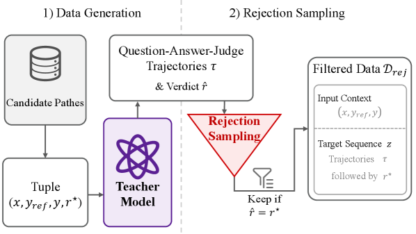
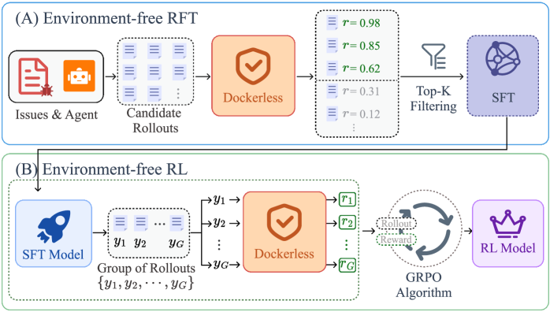

Dockerless：把验证 patch 变成一次仓库调查，训练环节就可以不搭 Docker
- Paper: Dockerless: Environment-Free Program Verifier for Coding Agents
- Version: arXiv v1, 2026-06-26
- Authors: Wenhao Zeng, Yuling Shi, Xiaodong Gu, Chao Hu, et al.（共 13 人）
- 类型: SWE agent verifier / post-training pipeline / system + method paper
- 关键词: coding agent, patch verifier, environment-free training, SFT filtering, RL reward
读法：给人和 agent 的路标
这篇先抓一句话：Dockerless 不是取消执行测试，而是把后训练里最麻烦的 per-repository Docker 执行，换成一个会读仓库、会收集证据的 agentic verifier。 它的论证结构是一条三层证据链：verifier 自身 AUC → SFT 筛选质量 → RL reward 质量，每一层都拿 execution-based 结果做对照。快速读法：先看”一句话判断”、自制流程图、Table 2 / Table 3 / Table 1 三张表，再看”需要警惕”里的边界条件。
给 agent 以后检索时，关键词是：repo-grounded verifier、verification questions、read-only sub-agent、dense reward from verdict logits、rejection-sampled trajectory training、SFT filtering、GRPO reward、execution labels remain external、compiler diagnostics boundary。这篇应放在”coding agent 后训练 / verifier / 环境替代”这条线里，不要归入普通 LLM-as-judge。
一句话判断
Dockerless 把程序验证器从静态 LLM judge 变成一个会主动读仓库的 agentic workflow——生成 2-4 个 verification questions、派只读 sub-agent 并行收集证据、再聚合判分；它作为 verifier 比最强开源 verifier 高 +14.3 AUC，用它筛 SFT 数据和发 RL reward 能把 Qwen3.5-9B 训到 62.0 / 50.0 / 35.2（SWE-bench Verified / Multilingual / Pro），几乎追平 test-execution 后训练——但 verifier 自己的训练和评测标签仍来自执行测试，”environment-free”只覆盖后训练环节。
图表优先读法
| 先看 | 图/表 | 读完应该抓住什么 |
|---|---|---|
| 1 | Figure 1 | Dockerless 的定位：比 LLM scorer 多 repo grounding，比 Docker tests 少环境成本 |
| 2 | Table 2 | 证据链第一层：verifier 自身 AUC 81.0 / 72.1，压过全部 8 个 baseline |
| 3 | Figure 5 | verification questions 有边际价值，2-4 个是 sweet spot |
| 4 | Table 3 | 证据链第二层：SFT 筛选，Dockerless 4K 追平 Env-based 4K |
| 5 | Table 1 | 证据链第三层：RL reward，62.0 vs test-execution 的 62.4 |
| 6 | Figure 6 | 成本没有被藏起来：reward +180s，只占 per-rollout 时间 7.2% |
先看我整理的流程图

自制图解：Dockerless 拿到 issue、reference patch、candidate patch 后，先拆出 2-4 个可查证的 verification questions，每个问题派一个只读 repo explorer 去仓库里找证据，最后 judge 聚合 Q/A evidence，输出可用于 SFT filtering 或 RL reward 的 dense score。注意执行测试仍在外层：verifier 的训练标签和评测标签都来自 per-repo Docker，省掉的是每条训练 rollout 都要跑 Docker 的成本。
图里有三个锚点：
- reference patch 不是拿来做相似度匹配的：它更像”答案解析”，帮 verifier 决定应该检查哪些语义条件。
- repo explorer 是信息增量：普通 LLM judge 只看文本，Dockerless 会主动查调用链、测试、配置和相关文件。
- 执行信号没有消失，只是被移到了训练 verifier 的那一次：训练好之后，rollout 收集、SFT 筛选、RL reward 全程只需要一个 minimal base image。
问题背景：verifier 卡在哪
训练 coding agent 时，verifier 出现在两个关键位置：SFT/RFT 数据筛选（从大量 rollouts 里挑出真正解决 issue 的轨迹）和 RL reward（给每个 rollout 的 final patch 打分）。传统 gold signal 是 execution-based verification：把 patch 放进仓库专属 Docker 环境跑 held-out tests。信号强，但成本硬——每个仓库要定制 image、依赖、test runner 和结果解析，而很多私有、企业、遗留仓库根本没有可复现环境。
论文在 Appendix A 里先补了一个动机实验：四个 frontier model（DeepSeek-V3.2、Kimi-K2.5、GLM-5、GPT-5.4）在 OpenHands 下做 env-free rollout，相比 env-based 平均只掉 7.1 分（最多 13.9，GPT-5.4 只差 3.0-4.0）。也就是说 agent 侧早就可以 env-free 跑了，真正卡住整条 pipeline 的是 verifier 侧——这正是本文的切口。

原图来自论文 Figure 1：Docker-based tests 准但 hard to scale；LLM scorer env-free 但 surface-level（例子里把功能等价的 patch 打 0.35）；Dockerless 走中间路线——env-free 且 repo-grounded，同一个 patch 因为有仓库证据被打 0.92。
方法：三段式 agentic verifier

原图来自论文 Figure 2：输入 issue x、reference patch y_ref、candidate patch y；Question Generation 做 multi-dimensional evidence probing；并行 sub-agents 用只读工具查静态 codebase 产出 evidence-backed answers；Judge 聚合全部 Q/A 输出 r_phi ∈ [0,1]。三个阶段共享同一个 backbone。
Stage 1 — 生成验证问题。 从 issue 和 reference patch 派生 K=2-4 个 verification questions，把”这个 patch 对不对”拆成可查证的维度：修复应落在哪条调用链、修改后的行为应该是什么、哪些测试/断言/配置能证明、会不会破坏其他路径。
Stage 2 — 并行仓库探索。 每个问题派一个 sub-agent，只用 read-only shell tools（find、grep、rg）在仓库里找证据，返回 evidence-backed answer；多个 sub-agent 并行跑以控制延迟。
Stage 3 — 证据聚合与打分。 judge 看到完整上下文 (x, y_ref, y, {(Q_k, A_k)})，输出二分类 verdict token。推理时不取 hard label，而是读 token 0 和 1 的 logits 做 softmax，得到 dense score：r_phi(x, y) = exp(l_1) / (exp(l_0) + exp(l_1))。连续分数让同一个 verifier 既能做 top-K filtering 又能当 RL reward。
Verifier 怎么训练：rejection sampling 蒸馏完整轨迹

原图来自论文 Figure 3：teacher model 对每个 execution-labeled 样本生成 question-answer-judge trajectory，rejection sampling 只保留 verdict r_hat 与执行标签 r_star 一致的轨迹，再用来微调 base model。学的是完整推理过程，不是孤立的 0/1 分类器。
训练不是自监督，它仍依赖 execution-labeled candidate patches：
- 每个样本是
(x, y_ref, y, r*)，r*来自 held-out unit tests。 - teacher model（GLM-5）生成完整 question-answer-judge trajectory。
- 只保留 verdict 与
r*一致的轨迹；另外丢弃 少于 4 轮或多于 30 轮 的轨迹和 malformed exchanges。 - negative:positive 比例 cap 在 4:1 缓解类别不平衡。
- 在共享 backbone（Qwen3.5-9B）上做 next-token cross-entropy，question generation / exploration / judgment 三个子任务联合训练。
实现细节：语料来自 SWE-Gym 和 Multi-SWE-RL 的 3.7K unique issues（与评测 benchmark 不相交）；candidate patch 文本和 rendered Q+A context 各截断到 10,000 characters；batch size 256，max sequence length 32,768；推理用 vLLM serving。
所以”environment-free”要精确理解：rollout 收集、SFT 筛选、RL reward 不跑 per-repo Docker；但 verifier 的训练数据和评测标签仍来自执行测试。
后训练 Pipeline：filter 和 reward 两个插口

原图来自论文 Figure 4：(A) Environment-free RFT——candidate rollouts 经 Dockerless 打分后 top-K 筛选进 SFT；(B) Environment-free RL——从 SFT model 出发，GRPO 用 Dockerless 作为 per-rollout reward source。两个环节都只需要 minimal base image。
Env-free RFT/SFT：在 minimal Ubuntu 22.04 LTS image（ubuntu:jammy，无 per-repo Docker）里用 OpenHands agent 在 SWE-Rebench-v2 上收集 16K rollouts（temperature 1.0）；每个 final patch 用 M=2 次独立 Dockerless pass 打分取平均（失败 pass 丢弃）；全局选 top 4K 做 SFT（Qwen3.5-9B 初始化，3 epochs）。一个容易漏掉的细节：env-free 不等于零执行——OpenHands 的工具仍可用，agent 可以跑通用 developer utilities 拿到一些执行反馈，只是没有仓库专属的依赖和 test runner。
Env-free RL：从 Dockerless-SFT-9B 出发跑 GRPO，每个 issue 采 G=8 rollouts，reward 同样是 M=2 次 Dockerless pass 的均值；actor LR 2e-6，clipping range [0.2, 0.27]，无 KL loss，每 rollout 最多 150 turns，共 50 RL steps，全程零 test execution。
三层证据链
第一层：verifier 自身 AUC
论文构造了一个 balanced trajectory-level verifier benchmark，共 776 samples（500 来自 SWE-bench Verified，276 来自 Multi-SWE-bench Flash），轨迹由多个模型在 SWE-agent 和 OpenHands 两种 scaffold 下按 1:1 收集，label 来自 per-repo Docker + held-out tests，正负样本 1:1 平衡。
| Verifier | 类型 | Verified AUC | Multi-SWE AUC |
|---|---|---|---|
| DeepSeek-V3.2 | zero-shot judge | 69.4 | 58.5 |
| Kimi-K2.5 | zero-shot judge | 70.7 | 63.9 |
| GLM-5 | zero-shot judge | 73.2 | 62.5 |
| GPT-5.4 | zero-shot judge | 75.9 | 59.5 |
| SWE-Gym Verifier | trained | 61.0 | 53.7 |
| R2E-Gym Verifier | trained | 64.3 | 55.1 |
| OpenHands Critic | trained | 48.6 | 52.2 |
| DeepSWE Verifier | trained | 66.7 | 62.9 |
| Dockerless | agentic | 81.0 | 72.1 |
两组对照各有含义：比最强 trained open-source verifier（DeepSWE）高 +14.3 / +9.2；比最强 frontier judge 也高 +5.1 / +8.2。后一组更关键——如果收益只是”模型更强”，zero-shot frontier judge 应该已接近上限；结果说明增量来自 repo exploration + rejection-sampled trajectory training 这个 workflow，9B backbone 也能压过 GPT-5.4 judge。
第一层的 ablation：问题数量 K

原图来自论文 Figure 5：SWE-bench Verified 上 AUC 随 verification question 数量的变化，K=0 时 78.3，K=4 达到峰值 81.0，再往上反而回落。
| # Questions | 0 | 1 | 2 | 4 | 6 | 8 |
|---|---|---|---|---|---|---|
| AUC (Verified) | 78.3 | 80.1 | 80.8 | 81.0 | 79.6 | 80.3 |
读法：问问题和收集证据确实有帮助（K=0 → K=4 涨 2.7），但不是越多越好，2-4 个是 sweet spot——这也是论文在 accuracy 和 per-call exploration cost 之间选定的推理配置。注意 K=0 仍有 78.3，说明相当一部分收益来自 rejection-sampled 训练本身，questions 是在此之上的边际增量。
第二层：SFT 筛选质量
Table 3 固定 Qwen3.5-9B backbone 和 SFT recipe，只换训练数据来源：
| SFT Data | Verified | Multilingual | Pro |
|---|---|---|---|
| None (base) | 59.6 | 41.3 | 32.3 |
| All 16K env-free | 58.8 | 41.3 | 31.9 |
| Random 4K | 58.2 | 44.3 | 32.0 |
| Env-based 4K | 60.0 | 48.3 | 33.9 |
| Dockerless 4K | 60.6 | 47.7 | 35.3 |
这张表比”最终分数高”更有信息量：All 16K 低于 base，说明 env-free rollouts 噪声不小、裸堆数据是负收益；Random 4K 也不行，说明不是少训一点就好；Dockerless 4K 追平甚至部分超过 Env-based 4K（Multilingual 上略低 0.6），说明 verifier 的筛选信号质量接近真实执行筛选。
第三层：RL reward 质量
Table 1 从同一个 Dockerless-SFT-9B 出发，只换 RL reward source：
| Model / Reward | Env-free? | Verified | Multilingual | Pro |
|---|---|---|---|---|
| Qwen3.5-9B base | – | 59.6 | 41.3 | 32.3 |
| Dockerless-SFT-9B | Yes | 60.6 | 47.7 | 35.3 |
| + DeepSWE-Verifier RL | Yes | 60.6 | 47.3 | 34.1 |
| + Test-Execution RL | No | 62.4 | 51.3 | 35.7 |
| Dockerless-RL-9B | Yes | 62.0 | 50.0 | 35.2 |
三个读点：DeepSWE-Verifier 当 reward 基本不涨甚至倒退（弱 verifier 会把 RL 带偏）；Dockerless reward 距 test-execution reward 只差 0.4 / 1.3 / 0.5；相对 base 的总提升是 +2.4 / +8.7 / +2.9。论文要证明的不是 Dockerless 比真实测试更准，而是：在训练阶段，它作为 reward 已经足够接近 test execution，且全程零 per-repo Docker。
三层连起来看逻辑就闭合了：第一层证明分数可信（AUC 领先），第二层证明分数能变成筛选收益（追平 env-based 筛选），第三层证明分数能变成 reward 收益（逼近 test-execution RL）。任何一层单独拿出来都可以被质疑，三层互相咬合才是这篇的说服力所在。
成本：省掉的和新增的

原图来自论文 Figure 6：RL 中 per-rollout wall-clock 分解（基于 7680 条 rollouts）。共享的 agent rollout 平均 2308s；reward 侧 DeepSWE Verifier +41s（1.7%）、Test Execution +83s（3.5%）、Dockerless +180s（7.2%）。
Dockerless 要做多步仓库探索，所以 reward 计算确实最慢（+180s，是 test execution 的两倍多），但在这个 RL setting 里 rollout 生成才是瓶颈（2308s），reward 只占总时长 7.2%；Appendix F 进一步显示三种 reward source 的端到端延迟分布几乎重合，因为吞吐由逼近 timeout 的慢 rollout 主导。边界条件要记住：这个”成本可忽略”的结论依赖 rollout 很长这个前提——如果你的任务 rollout 只要几十秒，Dockerless reward 的相对开销会立刻显眼。
Case study：为什么 repo grounding 有用
Figure 7 给了一个 matplotlib offsetText color issue 的典型案例：candidate patch 通过执行测试（r_env = 1.0），但用 inline conditional 而不是 reference patch 的 helper-variable 重构。文本相似度只给 0.468，DeepSWE Verifier 给 0.035（严重误判）；Dockerless 的 sub-agents 查证了修改覆盖 XAxis/YAxis 两条初始化路径、语义保持一致，最终打 0.996，与执行结果一致。这正是”surface-form invariance”——功能等价但写法不同的 patch，只有拿到仓库证据才能判对。
我怎么判断
可信之处
- 三层证据链完整且互相咬合：standalone AUC、SFT filtering、RL reward 都有 execution-based 对照，不是单点 cherry-pick。
- Table 3 是干净的控制实验：backbone 和 recipe 全固定，只动数据来源，还包含 All 16K 和 Random 4K 两个必要的阴性对照。
- 对手选得不弱：frontier judge 里有 GPT-5.4，trained verifier 里有 DeepSWE，且训练集与评测 benchmark 声明不相交。
- 成本没有被藏起来：Figure 6 + Appendix F 主动报了 reward 延迟，并给出成立前提。
- Appendix B 有额外惊喜：env-free 部署时，Dockerless 系模型的 env-based→env-free 掉分（-7.1 / -6.8）小于 env-based 训练的 baseline（-9.4），训练分布和部署分布一致带来了鲁棒性。
需要警惕
- 不是完全无执行。 verifier 的训练标签（3.7K issues）和评测标签都来自 per-repo Docker 测试；”env-free”只是把执行成本从每条 rollout 摊薄到一次性的 verifier 训练。
- 依赖 reference patch。 question generation 以
y_ref为输入，这在 benchmark/训练数据里可得，但真实新 issue 没有 golden fix——所以它的自然落点是训练数据筛选和离线 reward，不是线上 code review。 - compiler-heavy 语言是明确边界。 Appendix E：env-based SFT 在 Rust +7.0、C +13.3 上明显占优，作者归因于 compiler diagnostics 只存在于执行环境里；Python/Go/JS/Java/PHP 则在 ±2.5 之内（TypeScript -13.3、C++ -8.3 来自仅 30/12 个样本的 split，论文自己也不当证据）。
- 静态证据有上限。 并发 bug、性能退化、外部服务交互这类只能在运行时暴露的问题，read-only 探索原则上看不到。
- 成本被换形而非消失。 省掉 Docker/test setup，换来 sub-agent exploration、vLLM serving、M=2 重复打分和 timeout 管理；且”7.2% 可忽略”依赖 2308s 的长 rollout。
- 没有专门的 Limitations 章节，上面这些边界大多是从 appendix 和实现细节里读出来的，作者的正文叙事偏乐观。
对我的价值
放进”环境合成 / verifier / RL for coding agents”这条线：CLI-Universe、SWE-World 在构造或复用可执行环境；world-model 路线在学环境动力学；Dockerless 是第三条中间路线——不模拟完整环境，也不搭 per-repo Docker，而是训练一个会查证据的 verifier。它给我的可操作 checklist：
- 复现顺序应该沿着证据链走：先建小型 verifier benchmark（issue + reference patch + candidate patch + execution label），对比文本相似度 / LLM judge / agentic judge 的 AUC；AUC 有明显收益再接 SFT filtering；最后才是 RL reward。
- verifier 值得训练完整轨迹而不是分类头：rejection sampling 保留 question→evidence→verdict 全过程，是它压过 zero-shot frontier judge 的关键。
- verdict logits → dense score 的技巧可以直接搬：一个 verifier 同时服务 top-K filtering 和 reward modeling。
- 判断”env-free 是否适用”的两个测试：任务语言是否 compiler-heavy（Rust/C 就别省环境）；rollout 是否足够长（否则 agentic reward 的相对成本不可忽略）。
一句话收束
Dockerless 最值得记住的不是”没有 Docker”，而是”把验证变成一次有证据链的仓库调查”——执行信号没有被抹掉，只是被压缩进一次性的 verifier 训练里，然后以 dense score 的形式摊薄到整条 post-training pipeline 上。